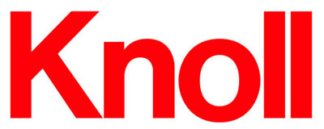

Exercise 2
CSS Properties Review
Helvetica: Old and Neue
Ilene Strizver
Article excerpt from from fonts.com.

Knoll logo.
The Helvetica design can be seen virtually everywhere: in print, on the web, in the news and even in the movies (Helvetica, the film, is a must see!). Since its release in 1957, Helvetica has steadily been one of the most popular typefaces.
The history of Helvetica includes a number of twists and turns. There are, in fact, two versions of Helvetica. The first one is the original design, which was created by Max Miedinger and released by Linotype in 1957. And secondly, in 1983, D. Stempel AG, Linotype’s daughter company, released the Neue Helvetica font design, which was a re-working of the 1957 original. In addition, Linotype released the Neue Helvetica Pro design in 2004, which is an OpenType version with expanded foreign language support.
“The resulting total is 51 weights in all — many more than in the original family.”
So why was this classic redesigned in 1983? Since its original launch, Helvetica had been worked on by a variety of designers to adapt it for successive methods of composition, from hot metal to photocomposition to digital. In addition, given the technical limitations of some methods, the character weights, widths and spacing were inconsistent and compromised. As technologies improved, these limitations were removed, allowing total design freedom.
What’s new in Helvetica Neue?
Refinement of characters. A number of characters were subtly changed to be more consistent and more harmonious with the overall design characteristics, as well as to improve legibility. For instance, widened crossbars on the lowercase f and t increase character recognition in text.
Improved punctuation. Some of the punctuation has been reworked for better balance and improved results in reproduction.
Additional weights. The entire Neue Helvetica font family, which can be viewed here, includes eight weights plus italics for the regular, obliques for the expanded versions, as well as nine weights plus obliques for the condensed. There is also a bold outline version for the regular width. The resulting total is 51 weights in all — many more than in the original family.
New numbering system. Each weight is identified by a number — in addition to the weight name — for easy reference, similar to the Univers and Frutiger designs.
Cap and x-height adjustments. The cap height is now consistent throughout the family, correcting subtle differences in the previous version. The x-height has been adjusted to appear visually the same in all weights. The x-heights in previous versions were all the same actual height, but, since type tends to look shorter as it gets heavier, the new x-heights compensate for this optical illusion.
Regardless of whether Helvetica is part of your daily fare, an occasional treat or a typographic taboo, it is certainly a typographic tour de force to be reckoned with!
About Neue Helvetica Font Family
Linotype
Article excerpt from from linotype.com.
American Airlines logo, designed in 1967 by Vignelli Associates.
In 1983, D. Stempel AG redesigned the famous Helvetica typeface for the digital age, creating Neue Helvetica for Linotype: a self-contained font family. Today, this family consists of 51 different font weights.
Its original numbering system for the weight designations came from Adrian Frutiger’s numbering system for the Univers family. The basic font weight, Neue Helvetica Roman, is at the heart of this numbering system. The designation 55 Roman forms the central point. The first figure of the number describes the stroke thickness — 25 for ultra light to 95 for extra black. The second figure gives information on the width and orientation of the font — Neue Helvetica 53 Extended or Neue Helvetica 57 Condensed, for instance.
Neue Helvetica sets new standards in terms of its form and number of variants. It is the quintessential sans serif font, timeless and neutral, and can be used for all types of communication. Neue Helvetica is one of three Helvetica typeface families from Linotype. Aside from the original Helvetica from the 1960s, there is the 21st Century Helvetica World, with rich language support capabilities.
“It is the quintessential sans serif font, timeless and neutral.”
Neue Helvetica contains 51 different font weights. All weights are also available in Central European versions, supporting the languages of Central and Eastern Europe. Lastly, 34 weights are available in Cyrillic versions.
Many customers ask us what good non-Latin typefaces can be mixed with Neue Helvetica. Fortunately, Neue Helvetica already has Cyrillic versions, has Greek as well, and Helvetica World includes a specially-designed Hebrew Helvetica in its OpenType character set. But Linotype also offers a number of CJK fonts that can be matched with Neue Helvetica.
This has been a Watkins College Production